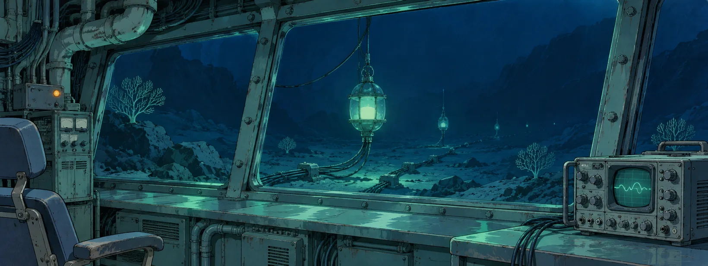

{%- comment -%}
The Django export supplies the page markup. Keep the existing public work history
in place and read the current education list from the same file as the Django app.
{%- endcomment -%}
{%- capture previous_home -%}{% include portfolio-baseline.html %}{%- endcapture -%}
{%- assign roles = previous_home | split: '<div class="positions">' | last | split: '<div class="education">' | first -%}
{%- assign previous_guide = previous_home | split: '<script id="guide-data" type="application/json">' | last | split: '</script>' | first -%}
{%- assign before_education = previous_guide | split: '"education": ' | first -%}
{%- assign after_education = previous_guide | split: ', "contact": ' | last -%}
{%- capture education -%}{% include_relative static/portfolio/education.json %}{%- endcapture -%}
<!doctype html>
<html lang="en">
<head>
  <meta charset="utf-8">
  <meta name="viewport" content="width=device-width, initial-scale=1">
  <meta name="theme-color" content="#07151b">
  <title>Dishank Jain — AI Engineer</title>
  <meta name="description" content="AI engineer in Noida building search, document extraction, and recommendation systems. Explore technical case studies, experience, and selected code.">
  <link rel="icon" type="image/svg+xml" href="static/portfolio/assets/manta-mark.svg">
  <script src="static/portfolio/navigation.js"></script>
  <link rel="stylesheet" href="static/portfolio/site.css?v=section-5">
  
  <link rel="preload" href="static/portfolio/assets/observatory-breathing.svg" as="image">
  <script defer src="static/portfolio/site.js?v=section-5"></script>

</head>
<body>
  <a class="skip" href="#main">Skip to content</a>
  <header class="site-header">
    <div class="header-inner">
      <span class="observatory-mark" aria-hidden="true"><svg viewBox="0 0 46 34" fill="none" aria-hidden="true"><path d="M2 13.5C11 14 18.2 9.5 23.4 3.5C28 10.6 35.8 14.2 44 13.5C37.8 17.5 33.8 22.2 30.4 27C27.7 25.9 25.6 24.1 23.7 21.6L21.4 31L19.5 21.5C17.7 24 15.4 25.7 12.9 26.5C11.3 22.2 6.1 16.3 2 13.5Z" stroke="currentColor" stroke-width="1.55" stroke-linejoin="round"/><path d="m8.4 15.2 11.7 3.6 3.2-9.1 3.7 9.1 10.9-3.4" stroke="currentColor" stroke-width="1.1" stroke-linejoin="round"/></svg>
</span>
      <div class="site-menu">
        <button class="menu-toggle" type="button" popovertarget="site-menu-panel"
                aria-label="Menu" aria-controls="site-menu-panel" aria-expanded="false">
          <span class="menu-glyph" aria-hidden="true"><i></i><i></i><i></i></span>
        </button>
        <div class="menu-sheet" id="site-menu-panel" popover="auto">
          <nav class="main-nav" aria-label="Main navigation">
            <a href="./#top">Home</a>
            <a href="./#work">My works</a>
            <a href="./#about">About</a>
            <a href="./#experience">Experience</a>
            <a href="./#skills">Skills</a>
            <a href="./#contact">Contact</a>
            <a href="https://github.com/Dishank25">GitHub</a>
          </nav>
          <fieldset class="theme-picker" hidden>
            <legend>Theme</legend>
            <label><input type="radio" name="appearance" value="abyss" checked> Abyss</label>
            <label><input type="radio" name="appearance" value="daylight"> Daylight</label>
          </fieldset>
        </div>
      </div>
    </div>
  </header>
  
<main id="main">
  <section id="top" class="descent" aria-labelledby="hero-title">
    <div class="hero">
      <div class="hero-art" aria-hidden="true">
        
      </div>
      <div class="hero-shade" aria-hidden="true"></div>
      <div class="sunshaft" aria-hidden="true"></div>
      <div class="particles" aria-hidden="true"></div>
      <div class="hero-inner shell">
        <div class="hero-copy">
          <p class="hero-role">AI Engineer in Noida, India</p>
          <h1 id="hero-title">Dishank <em>Jain.</em></h1>
          <p class="hero-intro">I build AI systems that can show where an answer came from.</p>
          <a class="action" href="#work">Explore my work</a>
        </div>
      </div>
      <div class="depth-shade" aria-hidden="true"></div>
    </div>
  </section>
  <div id="work" class="work-area">
    <section class="work shell" aria-labelledby="work-title">
      <div class="work-intro">
        <h2 id="work-title">My <em>works.</em></h2>
        <p>Explore my work in applied AI, Python, and mobile development. Each project explains the problem, the implementation, and the decisions behind it.</p>
        <figure class="room">
          
        </figure>
      </div>
      <div class="projects">
        
          <article class="project" id="pawsupport">
            <a class="project-link" href="projects/pawsupport/" aria-labelledby="project-title-pawsupport project-action-pawsupport">
              <p class="project-label">Retrieval and evaluation</p>
              <h3 class="project-title" id="project-title-pawsupport">PawSupport</h3>
              <p class="project-intro">A pet-care assistant that traces a customer’s question back to an approved FAQ.</p>
              <span class="project-action" id="project-action-pawsupport">View project</span>
            </a>
          </article>
        
          <article class="project" id="supportpilot">
            <a class="project-link" href="projects/supportpilot/" aria-labelledby="project-title-supportpilot project-action-supportpilot">
              <p class="project-label">Semantic search and APIs</p>
              <h3 class="project-title" id="project-title-supportpilot">SupportPilot</h3>
              <p class="project-intro">A support API with an explicit decision about when it has enough evidence to answer.</p>
              <span class="project-action" id="project-action-supportpilot">View project</span>
            </a>
          </article>
        
          <article class="project" id="abyssal-portfolio">
            <a class="project-link" href="projects/abyssal-portfolio/" aria-labelledby="project-title-abyssal-portfolio project-action-abyssal-portfolio">
              <p class="project-label">Python web development</p>
              <h3 class="project-title" id="project-title-abyssal-portfolio">Abyssal Observatory</h3>
              <p class="project-intro">The Django application behind this portfolio, with an animated GitHub profile and a static edition for GitHub Pages.</p>
              <span class="project-action" id="project-action-abyssal-portfolio">View project</span>
            </a>
          </article>
        
          <article class="project" id="veterinary-records">
            <a class="project-link" href="projects/veterinary-records/" aria-labelledby="project-title-veterinary-records project-action-veterinary-records">
              <p class="project-label">Structured data</p>
              <h3 class="project-title" id="project-title-veterinary-records">Veterinary document extraction</h3>
              <p class="project-intro">A FastAPI service that turns veterinary PDFs into a workbook with separate record types.</p>
              <span class="project-action" id="project-action-veterinary-records">View project</span>
            </a>
          </article>
        
          <article class="project" id="recommendations">
            <a class="project-link" href="projects/recommendations/" aria-labelledby="project-title-recommendations project-action-recommendations">
              <p class="project-label">Applied machine learning</p>
              <h3 class="project-title" id="project-title-recommendations">Product recommendations</h3>
              <p class="project-intro">A purchase-history recommender that distinguishes repeat demand from one unusually large order.</p>
              <span class="project-action" id="project-action-recommendations">View project</span>
            </a>
          </article>
        
          <article class="project" id="breed-identification">
            <a class="project-link" href="projects/breed-identification/" aria-labelledby="project-title-breed-identification project-action-breed-identification">
              <p class="project-label">Computer vision prototype</p>
              <h3 class="project-title" id="project-title-breed-identification">Pet breed identification</h3>
              <p class="project-intro">An image API that returns an explicit unknown result when the model has low confidence.</p>
              <span class="project-action" id="project-action-breed-identification">View project</span>
            </a>
          </article>
        
          <article class="project" id="job-portal">
            <a class="project-link" href="projects/job-portal/" aria-labelledby="project-title-job-portal project-action-job-portal">
              <p class="project-label">Flutter · Mobile development</p>
              <h3 class="project-title" id="project-title-job-portal">Student &amp; Recruiter Job Portal</h3>
              <p class="project-intro">A two-sided Flutter app for browsing openings, posting jobs or internships, and reviewing applications.</p>
              <span class="project-action" id="project-action-job-portal">View project</span>
            </a>
          </article>
        
          <article class="project" id="job-discovery">
            <a class="project-link" href="projects/job-discovery/" aria-labelledby="project-title-job-discovery project-action-job-discovery">
              <p class="project-label">Flutter · Candidate experience</p>
              <h3 class="project-title" id="project-title-job-discovery">Flutter Job Discovery</h3>
              <p class="project-intro">A related job-portal snapshot focused on skills onboarding, search filters, and the candidate’s application flow.</p>
              <span class="project-action" id="project-action-job-discovery">View project</span>
            </a>
          </article>
        
          <article class="project" id="terminal-tic-tac-toe">
            <a class="project-link" href="projects/terminal-tic-tac-toe/" aria-labelledby="project-title-terminal-tic-tac-toe project-action-terminal-tic-tac-toe">
              <p class="project-label">Python · Game logic</p>
              <h3 class="project-title" id="project-title-terminal-tic-tac-toe">Terminal Tic-Tac-Toe</h3>
              <p class="project-intro">A standard-library Python game that lets a human play tic-tac-toe against a computer in the terminal.</p>
              <span class="project-action" id="project-action-terminal-tic-tac-toe">View project</span>
            </a>
          </article>
        
      </div>
    </section>
  </div>
  <section class="about band" id="about" aria-labelledby="about-title">
    <div class="shell about-grid">
      <div><h2 id="about-title">From screens <em>to search.</em></h2></div>
      <div class="about-body">
        <p>I started with datasets and Flutter screens. Working on both gave me a habit I still use. I follow an input all the way to the person who gets the result. In a support assistant, that means opening the source FAQ behind a reply. In a recommendation engine, it means checking why a product reached the top.</p><p>I’m based in Noida. My engineering work spans search, document extraction, recommendations, and computer vision. I currently work in AI consulting, bringing those engineering habits to conversations with business users.</p>
      </div>
    </div>
  </section>
  <section class="experience shell band" id="experience" aria-labelledby="experience-title">
    <div class="section-head">
      <h2 id="experience-title"><em>Experience.</em></h2>
    </div>
    <div class="positions">{{ roles }}<div class="education">
        <h3>Education</h3>
        <ul>
          
            <li><span>2020 – 2024</span><div>B.Tech in Computer Science and Engineering<small>United College of Engineering and Research, Greater Noida</small></div></li>
          
            <li><div>Student exchange program<small>Thailand</small></div></li>
          
        </ul>
      </div>
    </div>
  </section>
  <section class="skills band" id="skills" aria-labelledby="skills-title">
    <div class="shell skills-grid">
      <div><h2 id="skills-title">My <em>toolkit.</em></h2></div>
      <div class="skill-list">
        <article><h3>Retrieval and evaluation</h3><p>I use embeddings, semantic search, and ChromaDB to find relevant source material. Labeled queries and expected FAQ identifiers make retrieval behavior testable.</p></article><article><h3>Python applications</h3><p>I use Django to render this portfolio and FastAPI to build REST services. I validate structured data with Pydantic and build interfaces with Streamlit. Git and structured logging help me trace changes and inspect requests.</p></article><article><h3>Machine learning and data</h3><p>I use pandas and NumPy to prepare data, scikit-learn for machine learning, and cosine similarity and ranking for collaborative filtering.</p></article><article><h3>Interface development</h3><p>I’ve built Flutter applications in Dart, using Provider for state management and REST integrations for authentication.</p></article>
      </div>
    </div>
  </section>
  <section class="contact" id="contact" aria-labelledby="contact-title">
    <div class="contact-cover" aria-hidden="true"></div>
    <div class="shell contact-inner">
      <h2 id="contact-title">Get in <em>touch.</em></h2>
      <p>If you’re building an AI product around search, structured documents, or recommendations, I’d enjoy hearing what a good answer needs to look like for your users.</p>
      <div class="contact-links">
        <a href="https://www.linkedin.com/in/dishankjain25/">LinkedIn</a><a href="https://github.com/Dishank25">GitHub</a>
      </div>
    </div>
  </section>
</main>

  <footer>
    <div class="shell">
      <a class="brand" href="./#top">
        <svg viewBox="0 0 46 34" fill="none" aria-hidden="true"><path d="M2 13.5C11 14 18.2 9.5 23.4 3.5C28 10.6 35.8 14.2 44 13.5C37.8 17.5 33.8 22.2 30.4 27C27.7 25.9 25.6 24.1 23.7 21.6L21.4 31L19.5 21.5C17.7 24 15.4 25.7 12.9 26.5C11.3 22.2 6.1 16.3 2 13.5Z" stroke="currentColor" stroke-width="1.55" stroke-linejoin="round"/><path d="m8.4 15.2 11.7 3.6 3.2-9.1 3.7 9.1 10.9-3.4" stroke="currentColor" stroke-width="1.1" stroke-linejoin="round"/></svg>
<span>Dishank Jain</span>
      </a>
      <a class="return" href="#top">Back to the surface</a>
    </div>
  </footer>
  
<link rel="stylesheet" href="static/portfolio/assistant.css?v=abby-4">
<div class="guide-dock" data-guide data-state="docked" data-home="./" data-project="" hidden>
  <button type="button" class="guide-launch" aria-haspopup="dialog" aria-controls="guide-panel" aria-expanded="false" aria-label="Chat with Abby, Dishank’s robo assistant">
    
    <span class="guide-launch-text" aria-hidden="true">Ask Abby</span>
  </button>
  <section class="guide-panel" id="guide-panel" role="dialog" aria-labelledby="guide-title" hidden>
    <header class="guide-head">
      
      <div><h2 id="guide-title">Abby</h2><p>Dishank’s robo assistant</p></div>
      <button class="guide-close" type="button" aria-label="Close chat with Abby"><svg viewBox="0 0 20 20" fill="none" aria-hidden="true"><path d="m5 5 10 10M15 5 5 15" stroke="currentColor" stroke-width="1.6" stroke-linecap="round"/></svg></button>
    </header>
    <div class="guide-scroll" tabindex="0" role="region" aria-label="Conversation">
      <p class="guide-welcome">Ask me about his projects, what he built them with, or his experience.</p>
      <div class="guide-log" role="log" aria-label="Messages" aria-live="polite" aria-relevant="additions"></div>
      <div class="guide-suggestions" role="group" aria-label="Suggested questions">
        <button type="button">Which projects use AI?</button><button type="button">What’s his experience?</button>
      </div>
    </div>
    <form class="guide-compose">
      <label class="guide-sr" for="guide-input">Your question about Dishank</label>
      <input id="guide-input" name="question" type="text" placeholder="Ask about Dishank…" maxlength="650" autocomplete="off" enterkeyhint="send" required>
      <button class="guide-send" type="submit" aria-label="Send question">Send</button>
    </form>
  </section>
</div>
<script id="guide-data" type="application/json">{{ before_education }}"education": {{ education }}, "contact": {{ after_education }}</script>
<script defer src="static/portfolio/concierge-engine.js?v=abby-4"></script>
<script defer src="static/portfolio/chat-ui.js?v=abby-4"></script>

</body>
</html>
